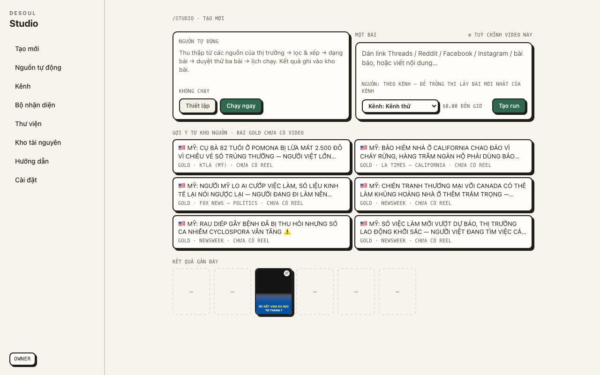
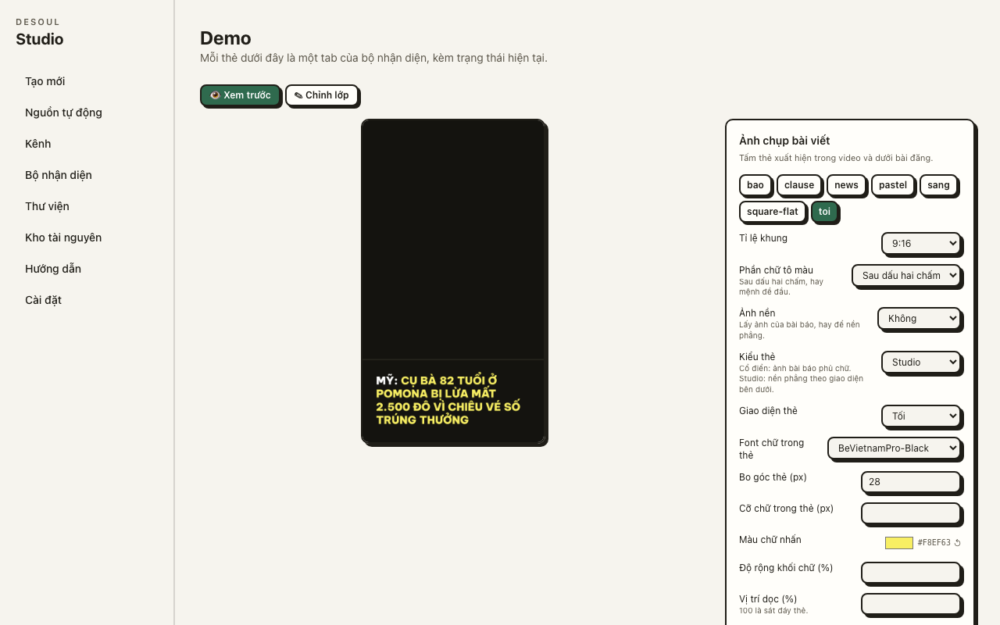
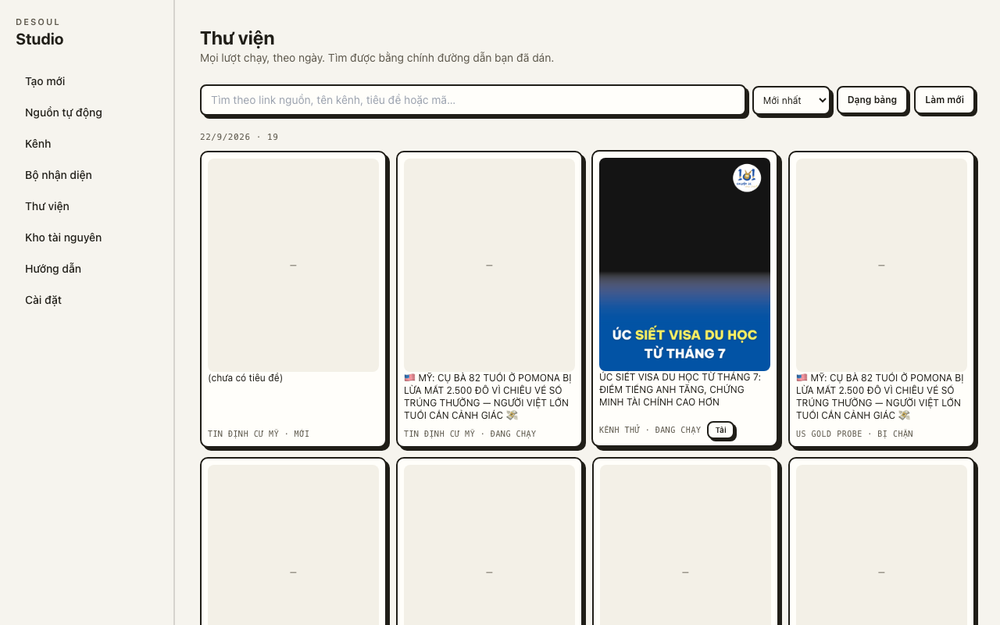
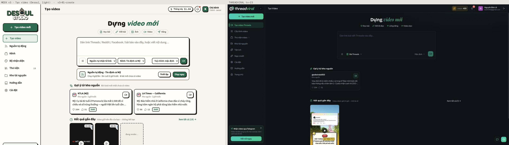
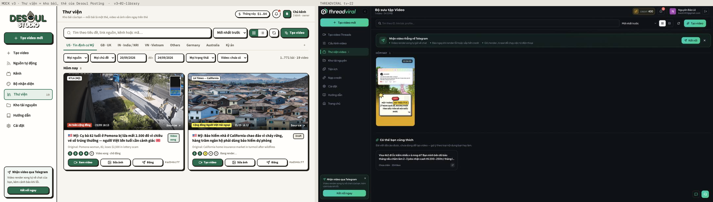
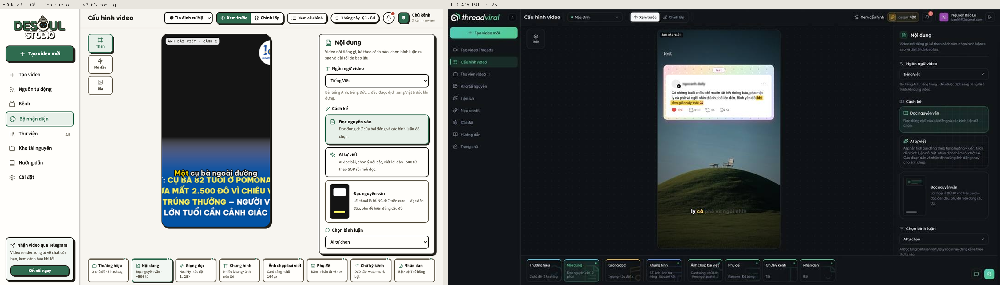
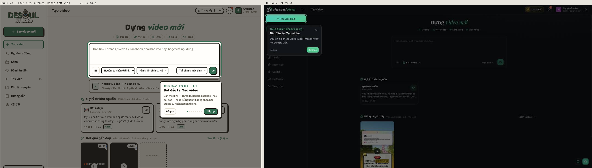

Plan · 2026-09-24 · auto-social-posting · Studio v3 · nothing built yet
Studio v3 — the reference's UI on the brand's skin, the lake as the library
v1 and v2 built the features; the owner said the UI was still "really bad" and asked for almost 100% of ThreadViral's UI/UX on the Desoul brand, the Desoul Posting card as the library, the image/video fix steps the old app has, and research on what else belongs. This page is the drawing. The executor's file is docs/plans/2026-09-24-studio-v3.md; the six mockups that were approved are in docs/plans/mock-v3/.
01What we take, what we already beat
Take from the reference (ThreadViral)
Anatomy of every screen
sidebar with icons + one green CTA; header with title · cost · bell · owner; a big headline and a paste box; a phone in the centre with a panel on the right and a tab strip below; scene list beside a player; day-grouped library; spotlight tour
Density and hierarchy
icon + title + helper on every group; radio cards for exclusive choices; two-line summaries on tabs; counts beside names
Empty states
icon · one-line reason · one action — never a dash
Keep, because ours is better
The brand
light paper, one pen, one green — no dark mode OWNER
Nguồn tự động — the reference has no crawler; ours writes Gold
Cost, not credits
Tháng này $1.84 from real run costs
Research finding that sets scope: ThreadViral is a render tool. A 1:1 copy has no destinations, no schedule, no analytics, no failure alerts — what every publisher (Buffer, Later, Metricool, Publer) treats as core. §05 adds that half; most of it is the old app's own components, imported.
02The one idea — the mock is the drawing
Why v2 read as plain text
Mono caps used for labels and headings — the brand says every number is mono, not every string
No icons, no filled CTA, empty tiles as dashes
The preview a black box with a card cut at both edges
Raw label + select forms; pen + shadow on everything equally
The sidebar typed DESOUL (brand rule 3 forbids it)
The rules the mocks follow
Baloo 2 headings · Source Sans labels · Source Code Pro only for numbers, ids, codes
One dark surface: the stage (phone, canvas, player), always inside a pen bezel
Pen + hard shadow only on raised things: cards, buttons, chips, the tooltip
One green: the sidebar CTA + one primary per screen; active tab = accent top edge, the rest pen-2
Lucide icons at stroke 2.25 on every row, section, tab and empty state
Today · /studio

Today · /studio/kits/demo

Today · /studio/library

03The screens — mock beside reference
S16 · Tạo video · /studio — mock 01-create | tv-23

Dựng video mới · the five-step rail as chips (the pipeline, not modes) · the paste box with its bottom bar (source auto-detected · channel · Tuỳ chỉnh · submit)
Nguồn tự động becomes a status strip under the box: cadence, last run, new posts, Thiết lập | Chạy ngay
Gợi ý từ kho nguồn as two-column cards with counts and a video button · Kết quả gần đây with real frames and a dashed "đang render 3/5"
S17 · Thư viện = the lake · /studio/library — mock 02-library | tv-22 (and Desoul Posting today)

The reference's toolbar (search · sort · grid/list · refresh · Tạo video) over the post lake: market tabs and filters from the old app, day groups
PostCard imported unmodified; Studio wraps it with five progress dots, the reel thumbnail on the hero, and Tạo/Xem video · Sửa ảnh · Đăng
One new filter: Video: tất cả / chưa có / đang render / xong / đã đăng
S18 · Cấu hình video · /studio/kits/[id] — mock 03-config | tv-25

Frame chips left (Thân · Mở đầu · Bìa) · the phone in a pen bezel · the panel right with icon + title + helper groups, radio cards with descriptions and an illustration
The bottom strip: eight tabs with icon, name and a two-line summary derived from the kit's values; the active tab gets the accent top edge
Preview fidelity: the demo kit gets a background, a card that fits 1080 px (pixel gate) and a subtitle sample — today's frame is black with the card cut at both edges
Every control PostCard's News Card has: 4:5 / 1:1 (+ 9:16 for the reel card) · main image from the article's images, an upload, or Kho tài nguyên · circle image · highlight · Tạo lại · Tải 1200×630 · Lưu vào bài (the same PATCH /api/posts)
"Ảnh này dùng ở đâu" — Facebook 1200×630 · cover · reel card: fix once, three places change
Kiểm tra 3/3: text inside the card (pixel) · source URL present · main image ≥ 1200 px
S20 · Tour — mock 06-tour | tv-32

A full-viewport SVG with one even-odd path cuts the hole; accent ring; a pen-card tooltip that never covers its target (below when there is no room to the right)
TỔNG QUAN STUDIO · 1/8 · Bỏ qua · dots · Tiếp tục — eight steps across the create page and the nav
No library: ~50 lines native; driver.js was the fallback, joyride/shepherd rejected (size, AGPL)
04Feature map — every reference feature, and where it lands
Left: the reference's screens, one row per feature. Right: our screens and the slice that builds them.
Click a feature or a screen for the detail card.
The same map as a list (what the executor reads)
Reference
Ours
Where
05The publisher half — what the reference never had
Add
Where it lives
Why
Destinations on Đăng: every connected Facebook page · Telegram · Thư viện
publish.tsWhere grows; the old app's photo/feed route is called, Reels upload added beside it
six pages and nothing names a target today
Time: now · a chosen time · next free slot; /studio/calendar
studio_publish; Facebook schedules itself, a publisher loop does the rest; ContentCalendar imported
every scheduler's core; absent from the reference
First comment with the source link
a field on Đăng, posted after publish
the compliance rule (cite the source) made cheap
Caption linter
limits.ts: FB/IG 2 200 (~125 before the fold), TikTok 2 200, YT 100/5 000; reports n/n
nothing stops an overrun today
Analytics pull-back · /studio/analytics
AnalyticsDashboard imported; studio_metrics per run, daily
no feedback loop into topic or market choice
Failure alerts
studio_alerts → the bell; Telegram when connected
a 4-hourly unattended pipeline with no failure signal
Auto-publish on render
a toggle on Door 1's last step
closes render → live
IG · TikTok · YouTube Shorts
later, after Facebook is measured
TikTok unaudited = SELF_ONLY
Numbers and API notes with URLs: docs/plans/mock-v3/research-features.md §C. UX evidence: research-ux.md.
06Slices — each a commit, each ends in a STOP triple
Each mock pair gains a third column — our real screen — and reads as one anatomy
Thư viện lists the lake with PostCard unmodified; a card shows its run's progress and video
Ảnh, Video and Viết bài carry every PostCard / VideoGenModal / tv-12 control — postcard-parity.test.ts fails when one goes missing
The demo run shows a real result on every step; the preview frame passes the pixel gate on every kit
The tour never covers what it describes; Đăng refuses an over-limit caption and says how many limits it checked; a forced failure reaches the bell in a second and Telegram in a minute
Mono appears only on numbers (a test walks every Studio component); no Studio file types DESOUL
make-reel.py, app/page.tsx, app/components, app/api, app/lib, app/globals.css byte-identical to main at every commit; :3000 untouched
08Beside, not instead
The old app at /, PostCard and its Tạo Video modal, every existing API route, every v1/v2 Studio page and its tests stay. Studio's CSS lives in app/studio/studio.css; a new route lives under app/api/studio/. Publishing calls the old app's Facebook route for what it already does and adds only Reels beside it — two implementations of "post a photo" drift by the first bug fix.